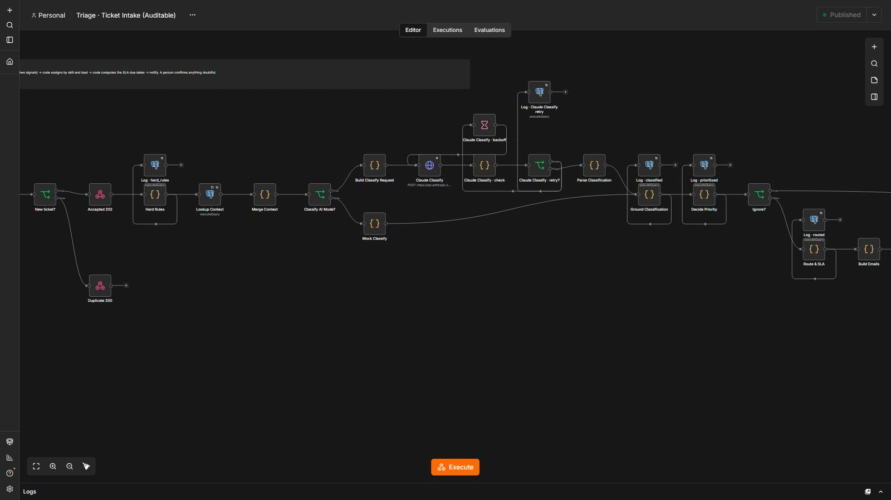
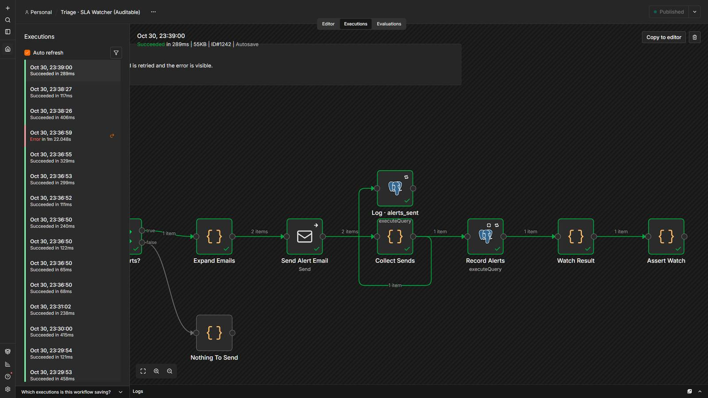
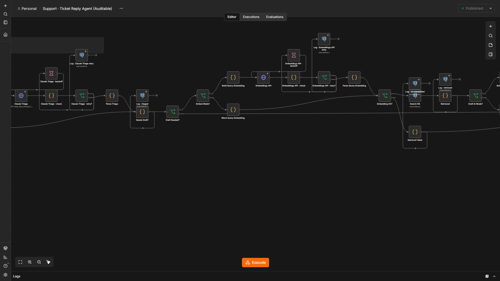

Never miss an SLA, and never send an answer you can’t source.
Tickets are classified, prioritized, assigned and put on SLA clocks by code; AI reads and drafts. Replies come only from your knowledge base with citations, and a watcher warns before a deadline is missed.
The evaluation uses local word-based embeddings: it measures the pipeline and its safeguards, not a real model’s accuracy.
5 steps, and who decides each one.
- Code decides
Hard rules first
Security, outage and legal wording sets a priority floor. Text that gives orders to the AI is flagged.
- AI reads
Read the ticket
Category, urgency and summary, each with the exact words it relied on.
- Code decides
Priority, owner, SLA
Evidence is checked in the text. A P1 needs two independent signals. Assigned by skill and load.
- AI readsA person
Answer from your knowledge base
Drafts cite their sources; every figure, date and link must appear in them. Doubt goes to a person.
- Code decides
Watch every deadline
Warns at 75 % of the window, escalates on breach, each alert sent once.
5 workflows
Ticket Triage · Intake
Classifies each incoming ticket, sets its priority, assigns it to the right person and starts the SLA clocks; anything doubtful goes to the triage lead.
Step by step
- Hard rules flag security / outage / safety wording and text that tries to give orders to the AI.
- Looks up the customer plan and every agent's open load.
- AI reads the ticket: category, proposed urgency and summary, each with the exact words it relied on.
- Code checks that evidence is really in the ticket, then decides the priority: rule and plan floors the AI cannot lower, and P1 only with two independent signals.
- Code assigns by skill and load, computes first-response and resolution due dates (P1 around the clock, the rest in business hours) and emails the assignee and, when needed, the lead.
- Ticket and audit event are saved in one atomic statement.
Ticket Triage · SLA Watcher
Every 5 minutes it checks every open ticket and warns before an SLA is missed, then escalates when it is.
Step by step
- Reads open tickets and the alerts already sent.
- Code computes each clock: on time, at risk (75 % of the window used) or breached, in business or calendar time.
- Groups alerts per recipient: the assignee sees their own, the lead sees every breach and every unassigned ticket.
- Sends the emails, then records only the alerts that were actually delivered.
Ticket Triage · Ticket Update
Records a first response, a resolution or a reassignment so the SLA clock stops and the change is audited.
Step by step
- Validates the action and who did it.
- Code decides the outcome: repeating a first response or a resolution changes nothing; a resolved ticket is frozen; only active agents can be assigned.
- Writes the change and an audit event with who and when in one statement, guarded by a version number.
Support · Ticket Reply Agent
Answers support emails from the knowledge base with the source cited; anything else goes to a person.
Step by step
- Hard rules first: legal, chargeback, fraud, health and privacy topics always go to a person.
- AI triages: is it support, intent, sentiment, does it ask for an action.
- Retrieves the 4 closest passages with pgvector.
- AI drafts using only those passages; code checks every number, link and email is in the cited text.
- Gate: reply on its own, a person approves, or escalate with no draft.
Support · KB Ingest
Loads a knowledge-base document: splits, embeds and stores it.
Step by step
- Splits the text into passages.
- Embeds each passage (mock embeddings locally).
- Upserts idempotently: unchanged documents change nothing; removed paragraphs are deleted.
The system in n8n.
Screenshots of the actual editor and of a real execution, from the local test environment. Click one to open it full size.





